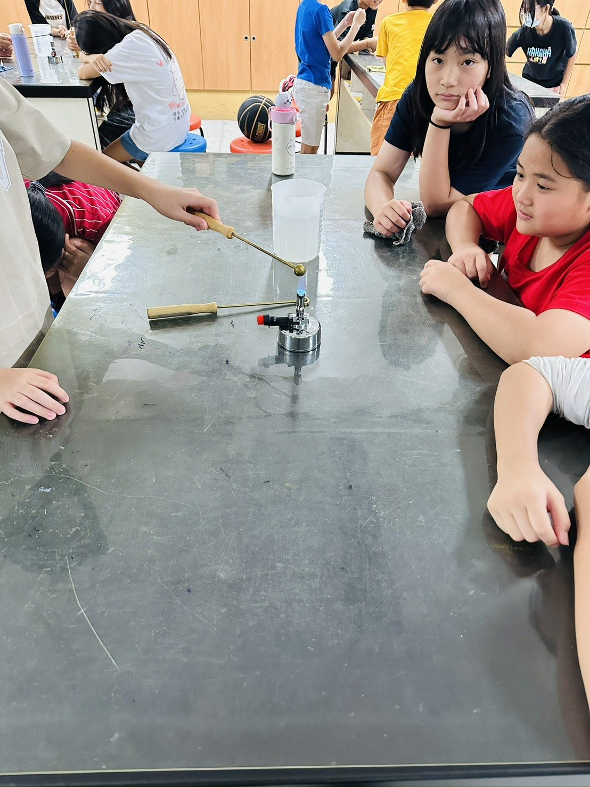
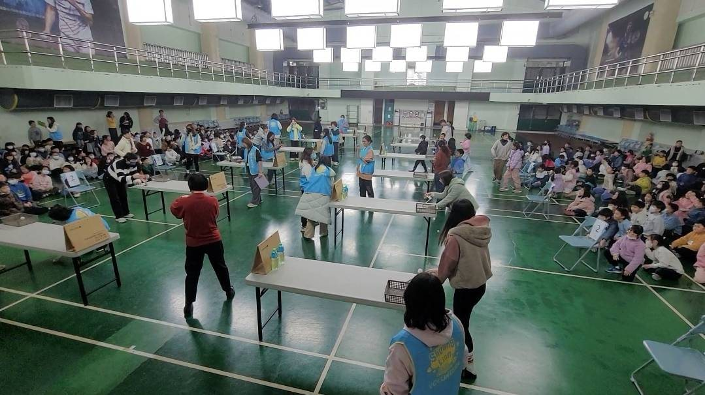
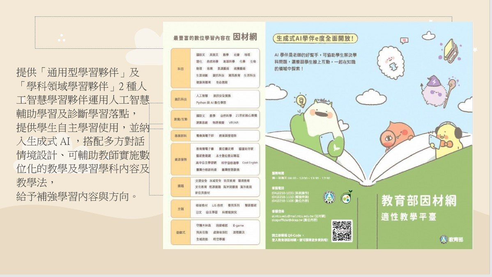

素養導向備課
透過共同備課交流，回扣十二年國教素養精神，討論自然科知識如何透過情境、脈絡、動機、歷程、方法與活用幫助學生學習。
雙蓮國小 114 學年度自然科領域備課社群
以共同備課為起點，串起觀察實作、科學趣味競賽、NotebookLM 教材整理與數位自主學習，呈現自然科教學從設計到實施的完整歷程。
報告主軸
這份歷程網頁沿用 Learning Portfolio 的整理方式，以時間、主題、證據與反思並陳。每個章節都保留現場照片、學生作品或平台畫面，讓教學設計的脈絡可以被看見。
透過共同備課交流，回扣十二年國教素養精神，討論自然科知識如何透過情境、脈絡、動機、歷程、方法與活用幫助學生學習。
學生理解彈力原理後設計投石器，從課堂實作延伸到年級競賽，讓科學概念在動手做與公開展示中被驗證。
以主題式課程內容延伸自然課學習，整理資料、分類架構與心智圖，讓教材更容易檢索、對話與再設計。
搭配線上學習平台與 AI 學習夥伴，補強課後學習環境，也讓學生能依照自己的節奏預習、複習與補強。
探究教學歷程
課堂設計不只停在知識傳遞，而是讓學生在具體情境中看見問題，提出想法，再用實驗與紀錄回到科學證據。
從校園植物、材料變化與活動現場切入。
把生活中看到的現象轉成可討論的問題。
蒐集資料並交換不同組別的想法。
說明可能原因，準備用實作來驗證。
操作、測試、調整，讓抽象概念具體化。
保留過程證據，回看學習與教學安排。
素養導向備課與教學
社群備課從課程目標、探究流程與學生操作需求出發，連結物體受熱膨脹、科展實驗、種菜觀察等學習素材。學生在活動中不只接收知識，也練習觀察、描述、驗證與整理。

資料夾保留 114 上、下學期多次備課紀錄與簽到資料，呈現社群在不同階段持續討論課程安排。
物體受熱膨脹、科展紙飛機與種菜觀察，都讓學生透過看得見的變化理解自然科概念。
照片、學習紀錄與活動成果能幫助教師回看學生理解狀況，再調整下一次教學設計。
科學趣味競賽的籌備與施行
各年級以彈力設計投石器，舉辦投石器競賽。學生理解物體發生彈性形變後，為了恢復原狀而對接觸的物體施加力，再把這個原理轉成可測試的作品。

活動結合科學、技術、工程、藝術與數學，讓跨領域、動手做、生活應用、解決問題與五感學習同時發生。
課堂實作先讓學生熟悉材料與發射方式，再進入全體競賽，學生能看見設計差異帶來的效果。
課堂實作與練習
科學趣味競賽舉辦現場
NotebookLM 在自然科教材設計與應用
自然課實務操作常需要延伸課本內容。NotebookLM 可協助整理水生植物分類、產生摘要與心智圖，讓教師更快把資料轉成學生能閱讀、比較與提問的教材。
自主學習和數位學習資源應用
搭配線上學習平台，補強多元課後學習環境。因材網可支援自然科課本的預習與複習，也能降低部分個別差異造成的學習落差。

學生不受時間與空間限制，可以回家觀看實驗操作影片，延續課堂中的自然科學習。
通用型與學科領域學習夥伴可輔助學習與診斷落點，提供學生自主學習使用，也幫助教師規劃補強方向。